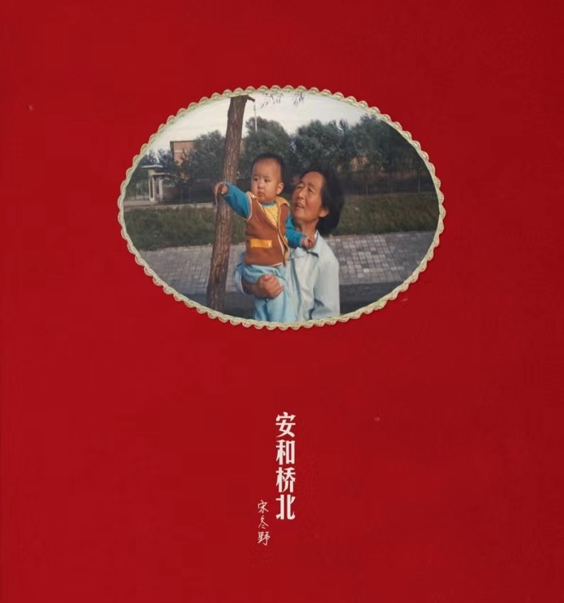

BACK

安和桥
宋冬野
3:38
lovely
Billie
3:29
Runninh Up That Hill
Kate Bush
3:09
歌
曲
相
关
《安和桥》是宋冬野写给他的奶奶的一首歌曲
宋冬野13岁的时候父母离异，之后他就经常去寡居的奶奶那玩，常常一玩就是一个夏天
而奶奶就住在北京的安和桥村。
一种拼命想要逃离的感觉，无论花费多少力气，无论话费多少时间，甚至要花费一百年
但到到最后Hello,Welcome home……
这是首很伤感的歌，但是听起来很好听
是一首表达渴望人与人之间能深层次连接的歌曲，凯特·布什踩着高低错落的音阶释放出了强烈的情感
该曲唱出了“奔上高山和巨厦的顶端不是为了更高更快更强，而是为了让你感受到我的痛苦”这一观点
蕴含着“人们应互换位置，感同身受他人在这个世界上生活的所有体验”这一道理